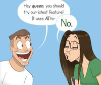

Continuing its product launches this week, Apple today announced the "MacBook Neo," an all-new, low-cost Mac featuring the A18 Pro chip. It starts at $599 and begins shipping on Wednesday, March 11. MacRumors reports: The MacBook Neo is the first Mac to be powered by an iPhone chip; the A18 Pro debuted in 2024's iPhone 16 Pro models. Apple says it is up to 50% faster for everyday tasks than the bestselling PC with the latest shipping Intel Core Ultra 5, up to 3x faster for on-device AI workloads, and up to 2x faster for tasks like photo editing. The MacBook Neo features a 13-inch Liquid Retina display with a 2408-by-1506 resolution, 500 nits of brightness, and an anti-reflective coating. The display does not have a notch, instead featuring uniform, iPad-style bezels.
It is available in Silver, Indigo, Blush, and Citrus color options. The colored finishes extend to the Magic Keyboard in lighter shades and come with matching wallpapers. It weighs 2.7 pounds. There are two USB-C ports. One is a USB-C 2 port with support for speeds up to 480 Mb/s and one is a USB-C 3 port with support for speeds up to 10 Gb/s. There is also a headphone jack. The MacBook Neo also offers a 16-hour battery life, 8GB of unified memory, Wi-Fi 6E and Bluetooth 6 connectivity, a 1080p front-facing camera, dual mics with directional beamforming, and dual side-firing speakers with Spatial Audio.
Read more of this story at Slashdot.
Intel has formally unveiled its Xeon 6+ "Clearwater Forest" data-center processor with up to 288 cores, built on the company's new Intel 18A process and using Foveros Direct packaging. The chip targets telecom, cloud, and edge-AI workloads with massive parallelism, large caches, and high-bandwidth DDR5-8000 memory. Tom's Hardware reports: Intel's Xeon 6+ processors with up to 288 cores combine 12 compute chiplets containing 24 energy-efficient Darkmont cores per tile that are produced using 18A manufacturing technology, two I/O tiles made on Intel 7 production node, as well as three active base tiles made on Intel 3 fabrication process. The compute tiles are stacked on top of the base dies using Intel's Foveros Direct 3D technology, whereas lateral connections are enabled by Intel's EMIB bridges.
Intel's 'Darkmont' efficiency cores have received rather meaningful microarchitectural upgrades. Each core integrates a 64 KB L1 instruction cache, a broader fetch and decode pipeline, and a deeper out-of-order engine capable of tracking more in-flight operations. The number of execution ports has also been increased in a bid to improve both scalar and vector throughput under heavily threaded server workloads.
From a cache hierarchy standpoint, the design groups cores into four-core blocks that share approximately 4 MB of L2 cache per block. As a result, the aggregate last-level cache across the full package surpasses 1 GB, roughly 1,152 MB in total. This unusually large pool is intended to keep data close to hundreds of active cores and reduce dependence on external memory bandwidth, which in turn is meant to both increase performance and lower power consumption. Platform-wise, the processor remains drop-in compatible with the current Xeon server socket, so the CPU has 12 memory channels that support DDR5-8000, 96 PCIe 5.0 lanes with 64 lanes supporting CXL 2.0.
Read more of this story at Slashdot.
A new Android app called Nearby Glasses alerts users when Bluetooth signals from smart glasses are detected nearby. The Android app, called Nearby Glasses, "launches at a time as there is an increasing resistance against always-recording or listening devices, which critics say process information about nearby people who do not give their consent," reports TechCrunch. From the report: Yves Jeanrenaud, who made the app, first spoke to 404 Media about the project and said he was in part inspired to make Nearby Glasses after reading the independent publication's reporting into wearable surveillance devices, including how Meta's Ray-Ban smart glasses have been used in immigration raids and to film and harass sex workers.
On the app's project page, Jeanrenaud described smart glasses as an "intolerable intrusion, consent neglecting, horrible piece of tech." Jeanrenaud told TechCrunch in an email that his motivation came from "witnessing the sheer scale and inhumane nature of the abuse these smart glasses are involved in." Jeanrenaud also cited Meta's decision to implement face recognition as a default feature in its smart glasses, "which I consider to be a huge floodgate pushed open for all kinds of privacy-invasive behavior."
The app works by listening for nearby Bluetooth signals that contain a publicly assigned identifier unique to the Bluetooth device's manufacturer. If the app detects a Bluetooth signal from a nearby hardware device made by Meta or Snap, the app will send the user an alert. (The app also allows users to add their own specific Bluetooth identifiers, allowing the user to detect a broader range of wearable surveillance gadgetry.) Further reading: Meta's AI Display Glasses Reportedly Share Intimate Videos With Human Moderators
Read more of this story at Slashdot.
Warner Bros. is developing a feature film set in the world of Game of Thrones with writer Beau Willimon of Andor and House of Cards. "That's about all we know right now, and as with everything 'Thrones' things could change, but the film is firmly in development," reports TheWrap. Page Six Hollywood was first to break the news and speculated that the story could revolve around Aegon I, the legendary Targaryen king who spawned a dynasty. From the report: The Targaryens have been at the center of all things "Thrones" on HBO, with "Game of Thrones" following Daenerys Targaryen's (Emilia Clarke) quest to usurp the throne, spinoff "House of the Dragon" set in the midst of the Targaryens' reign and recent spinoff "A Knight of the Seven Kingdoms" following the squire-ship of Aegon "Egg" Targaryen towards the end of the family's run atop the Iron Throne. All, of course, based on George R.R. Martin's expansive book universe.
Read more of this story at Slashdot.
NASA is eyeing an April launch window for the upcoming Artemis II mission after it repaired a helium-flow issue on the Space Launch System upper stage rocket. "Work on the rocket and spacecraft will continue in the coming weeks as NASA prepares for rolling the rocket out to the launch pad again later this month ahead of a potential launch in April," NASA wrote in an update on Tuesday. Space.com reports: The repair work occurred inside the huge Vehicle Assembly Building (VAB) at NASA's Kennedy Space Center (KSC) in Florida. Artemis 2's SLS and Orion crew capsule have been in the VAB since Feb. 25, when they rolled back to the hangar from KSC's Launch Pad 39B. Just a few days earlier, the Artemis 2 stack successfully completed a wet dress rehearsal, a two-day-long practice run of the procedures leading up to launch.
In the wake of that test, however, NASA noticed an interruption in helium flow in the SLS' upper stage. That was a significant issue, because helium pressurizes the rocket's propellant tanks. Rollback was the only option, as the affected area in the upper stage was not accessible at the pad. The problem took a potential March launch out of play for Artemis 2, which will send four astronauts on a roughly 10-day flight around the moon. It will be the first crewed flight to the lunar neighborhood since Apollo 17 in 1972.
The next Artemis 2 launch window opens in April, with liftoff opportunities on April 1, April 3-6 and April 30. And those options apparently remain in play, thanks to recent work in the VAB. That work centered on a seal in an interface through which helium flows from ground equipment into the SLS upper stage. That seal was obstructing the interface, which is known as a quick disconnect.
Read more of this story at Slashdot.
OpenAI is reportedly developing a code-hosting platform that could compete with GitHub, The Information reported on Tuesday. "If OpenAI does sell the product, it would mark a bold move by the creator of ChatGPT to compete directly against Microsoft, which holds a significant stake in the firm," notes Reuters. From the report: Engineers from OpenAI encountered a rise in service disruptions that rendered GitHub unavailable in recent months, which ultimately prompted the decision to develop the new product, the report said. The OpenAI project is in its early stages and likely will not be completed for months, according to The Information. Employees working on it have considered making the code repository available for purchase to OpenAI's customer base.
Read more of this story at Slashdot.
Google is accelerating Chrome's major release cadence from four weeks to two starting with version 153 on September 8th. "...our goal is to ensure developers and users have immediate access to the latest performance improvements, fixes and new capabilities," says Google. "Building on our history of adapting our release process to match the demands of a modern web, Chrome is moving to a two-week release cycle." The company says the "smaller scope" of these releases "minimizes disruption and simplifies post-release debugging." They also cite "recent process enhancements" that will "maintain [Chrome's] high standards for stability." 9to5Google reports: There will still be weekly security updates between milestones. This applies to desktop, Android, and iOS, while there are "no changes to the Dev and the Canary channels": "A Chrome Beta for each version will ship three weeks before the stable release. We recommend developers test with the beta to keep up to date with any upcoming changes that might impact your sites and applications."
The eight-week Extended Stable release schedule for enterprise customers and Chromium embedders will not change. Chromebooks will also have "extended release options": "Our priority is a seamless experience, so the latest Chrome releases will roll out to Chromebooks after dedicated platform testing. We are adapting these channels for the new two-week browser cycle and we will share more details soon regarding milestone updates for managed devices."
Read more of this story at Slashdot.
An anonymous reader quotes a report from Engadget: Users of Meta's AI smart glasses in Europe may be unknowingly sharing intimate video and sensitive financial information with moderators outside of the bloc, according to a report from Sweden's Svenska Dagbladet released last week. Employees in Kenya doing AI "annotation" told the journalists that they've seen people nude, using the toilet and engaging in sexual activity, along with credit card numbers and other sensitive information.
With Meta's Ray-Ban Display and other glasses with AI capabilities, users can record what they're looking at or get answers to questions via a Meta AI assistant. If a wearer wants to make use of that AI, though, they must agree to Meta's terms of service that allow any data captured to be reviewed by humans. That's because Meta's large language models (LLMs) often require people to annotate visual data so that the AI can understand it and build its training models.
This data can end up in places like Nairobi, Kenya, often moderated by underpaid workers. Such actions are subject to Europe's GDPR rules that require transparency about how personal data is processed, according to a data protection lawyer cited in the report. However, Svenska Dagbladet's reporters said they needed to jump through some hoops to see Meta's privacy policy for its wearable products. That policy states that either humans or automated systems may review sensitive data, and puts the onus on the user to not share sensitive information.
Read more of this story at Slashdot.
OpenAI is amending its Pentagon contract after CEO Sam Altman acknowledged it appeared "opportunistic and sloppy." On Monday night, Altman said the company would explicitly restrict its technology from being used by intelligence agencies and for mass domestic surveillance. The Guardian reports: OpenAI, which has more than 900 million users of ChatGPT, made the deal almost immediately after the Pentagon's existing AI contractor, Anthropic, was dropped. [...] The deal prompted an online backlash against OpenAI, with users of X and Reddit encouraging a "delete ChatGPT" campaign. One post read: "You're now training a war machine. Let's see proof of cancellation."
In a message to employees reposted on X, the OpenAI CEO said the original deal announced on Friday had been struck too quickly after Anthropic was dropped. "We shouldn't have rushed to get this out on Friday," Altman wrote. "The issues are super complex, and demand clear communication. We were genuinely trying to de-escalate things and avoid a much worse outcome, but I think it just looked opportunistic and sloppy." Upon announcing the deal, OpenAI had said the contract had "more guardrails than any previous agreement for classified AI deployments, including Anthropic's."
[...] However, observers including OpenAI's former head of policy research, Miles Brundage, have queried how OpenAI has managed to secure a deal that assuages ethical concerns Anthropic believed were insurmountable. Posting on X, he wrote: "OpenAI employees' default assumption here should unfortunately be that OpenAI caved + framed it as not caving, and screwed Anthropic while framing it as helping them." Brundage added: "To be clear, OAI is a complex org, and I think many people involved in this worked hard for what they consider a fair outcome. Some others I do not trust at all, particularly as it relates to dealings with government and politics."
In his X post, he also wrote that he would "rather go to jail" than follow an unconstitutional order from the government. "We want to work through democratic processes," Brundage wrote. "It should be the government making the key decisions about society. We want to have a voice, and a seat at the table where we can share our expertise, and to fight for principles of liberty."
Read more of this story at Slashdot.
Accenture is acquiring Downdetector parent company Ookla from Ziff Davis in a $1.2 billion deal to bolster its network analytics and visibility tools for telecoms, hyperscalers, and enterprises. "The deal, which will transfer all of Ziff Davis's Connectivity division to Accenture, includes Ookla's Speedtest, Ekahau, and RootMetrics," notes The Register reports: "Modern networks have evolved from simple infrastructure into business-critical platforms," said Accenture CEO Julie Sweet in a canned statement. "Without the ability to measure performance, organizations cannot optimize experience, revenue, or security." Ookla is meant to let them do just that.
Data captured at the network and device layer are used to enhance fraud prevention in banking, smart homes monitoring, and traffic optimization in retail, Accenture said. Ookla's platform, which lets user's test their own connectivity speed, captures more than 1,000 attributes per test, and provides the foundation for those analytics, Accenture said.
Read more of this story at Slashdot.
At Mobile World Congress, Cristiano Amon of Qualcomm argued that the coming 6G networks will power an AI-driven "agent economy," where devices and AI assistants constantly communicate across the network. "AI will fundamentally change our mobile experiences," Qualcomm chief executive, Cristiano Amon says. "It's going to change how we think about our smartphones. Think about our personal computing. Think about and interact with a car. The car is now a computing surface. If you actually believe in the AI revolution, 6G will be required. Resistance is futile." The company says early consumer testing could begin around the 2028 Los Angeles Olympics, with broader rollouts expected by 2029. Fortune's Kamal Ahmed reports: Akash Palkhiwala is Qualcomm's chief financial officer and chief operating officer. I spent some time with him at the company's stand, as his leading engineers took me through a 6G future where individuals will have real-time information delivered to them via their glasses. Palkhiwala compliments me on my watch, which only does one thing. It tells me the time. "6G is going to be the first time that connectivity and AI come together in the network. What we're building is the first AI-native wireless network that's ever been built," he explains.
"The traffic that we expect on 6G is way different than what we had before," says Palkhiwala. "Before, it was all about consumer traffic. We expect 6G to be driven by [AI] agent traffic. Think about all these use cases where there are AI agents sitting on various devices -- your glasses, your watch, your phone, your PC. These agents are going to be talking back and forth across the network to other agents and services. "The traffic completely changes. 6G is being built with this idea that the traffic that goes on the network is not just going to be consumer voice calls or downloading videos, we're going to have agents talking to each other, so the reliability of the network becomes very important."
On-device capabilities (the ability of your phone to process far more data); edge computing (locally sourced IT technology rather than distant data centers); more efficient use of available bandwidth (AI-enabled load control); and greater cloud access will all come together to produce a new wireless network. [...] "Today we are in the application economy," he notes. "On the phone, you want to make a travel reservation, you go to one application. You want to order an Uber, you go to a second application. You want to order food, you go to a third application, movie tickets, etc. The user has to go through that effort. In the future, you think of the app economy moving over to an agent economy, where there's one agent I'm interacting with, and I can ask that agent to book me a movie ticket or a plane ticket, to order food for me, get an Uber for me. It knows everything about me."
Read more of this story at Slashdot.
darwinmac writes: While many users choose Microsoft Office over LibreOffice because of its support for the proprietary formats (.docx, .xlsx, and .pptx), others prefer Office for its "better" ribbon interface. These users often criticize LibreOffice for having a "clunky" UI instead of the "standard" ribbon interface you would find in Word, Excel, and other Office apps.
Now, Neowin reports that LibreOffice is fighting back, arguing that its UI is actually superior because it is customizable, with several modes such as the classic toolbar interface, an Office-inspired ribbon layout, a sidebar-focused design, and more. Furthermore, it argues that there is no evidence that the ribbon offers "superior usability" over other interface modes. LibreOffice says in a blog post: Incidentally, the characterization of ribbon-style interfaces as "modern" or "standard," used by several users, is not based on any objective usability parameter or design principle, but is the result of Microsoft's dominance in the market and the huge investments made when the ribbon was introduced in Office 2007 as a new paradigm for productivity software. The idea that "modern" equals "similar to a ribbon" is a normalization effect: the Microsoft interface has become a benchmark because of its ubiquity, not because of its proven advantages in terms of usability. Added to this is the fact that many users evaluate office software through the lens of familiarity with Microsoft Office and consider deviation from it as a problem rather than a design choice. Before this, LibreOffice had also criticized its competitor OnlyOffice, accusing it of being "fake open source" because it believes OnlyOffice is working with Microsoft to lock users into the Office ecosystem by prioritizing the formats mentioned earlier instead of LibreOffice's own OpenDocument Format (ODF).
Read more of this story at Slashdot.
An anonymous reader quotes a report from the BBC: TikTok will not introduce end-to-end encryption (E2EE) -- the controversial privacy feature used by nearly all its rivals -- arguing it makes users less safe. E2EE means only the sender and recipient of a direct message can view its contents, making it the most secure form of communication available to the general public. Platforms such as Facebook, Instagram, Messenger and X have embraced it because they say their priority is maximizing user privacy.
But critics have said E2EE makes it harder to stop harmful content spreading online, because it means tech firms and law enforcement have no way of viewing any material sent in direct messages. The situation is made more complex because TikTok has long faced accusations that ties to the Chinese state may put users' data at risk. TikTok has consistently denied this, but earlier this year the social media firm's US operations were separated from its global business on the orders of US lawmakers.
TikTok told the BBC it believed end-to-end encryption prevented police and safety teams from being able to read direct messages if they needed to. It confirmed its approach to the BBC in a briefing about security at its London office, saying it wanted to protect users, especially young people from harm. It described this stance as a deliberate decision to set itself apart from rivals. "Grooming and harassment risks are very real in DMs [direct messages] so TikTok now can credibly argue that it's prioritizing 'proactive safety' over 'privacy absolutism' which is a pretty powerful soundbite," said social media industry analyst Matt Navarra. But Navarra said the move also "puts TikTok out of step with global privacy expectations" and might reinforce wariness for some about its ownership.
Read more of this story at Slashdot.
An anonymous reader quotes a report from MacRumors: OpenAI today updated its most popular ChatGPT model, debuting GPT-5.3 Instant. GPT-5.3 Instant is supposed to provide more accurate answers and better contextualized results when searching the web. The update also cuts down on unnecessary dead ends, caveats, and overly declarative phrasing, plus it has fewer hallucinations.
According to OpenAI, it tweaked the Instant model to address complaints about tone, relevance, and conversational flow, which are issues that don't show up in benchmarks. GPT-5.2 Instant had a "cringe" tone that could be overbearing or make unsubstantiated assumptions about user intent or emotions. The new model will have a more natural conversational style and will cut back on dramatic phrases like "Stop. Take a breath."
Users found that GPT-5.2 Instant would refuse questions it should have been able to answer, or respond in ways that felt overly cautious around sensitive topics. GPT-5.3 Instant cuts down on refusals and tones down overly defensive or moralizing preambles when answering a question. The model will no longer "over-caveat" after assuming bad intent from the user. GPT-5.3 Instant also provides higher-quality answers based on information from the web. OpenAI says that it is able to better balance what it finds online with its own knowledge, so it is less likely to overindex on web results.
Read more of this story at Slashdot.
Security researchers say a highly sophisticated iPhone exploitation toolkit dubbed "Coruna," which possibly originated from a U.S. government contractor, has spread from suspected Russian espionage operations to crypto-stealing criminal campaigns. Apple has patched the exploited vulnerabilities in newer iOS versions, but tens of thousands of devices may have already been compromised. An anonymous reader quotes an excerpt from Wired's report: Security researchers at Google on Tuesday released a report describing what they're calling "Coruna," a highly sophisticated iPhone hacking toolkit that includes five complete hacking techniques capable of bypassing all the defenses of an iPhone to silently install malware on a device when it visits a website containing the exploitation code. In total, Coruna takes advantage of 23 distinct vulnerabilities in iOS, a rare collection of hacking components that suggests it was created by a well-resourced, likely state-sponsored group of hackers.
In fact, Google traces components of Coruna to hacking techniques it spotted in use in February of last year and attributed to what it describes only as a "customer of a surveillance company." Then, five months later, Google says a more complete version of Coruna reappeared in what appears to have been an espionage campaign carried out by a suspected Russian spy group, which hid the hacking code in a common visitor-counting component of Ukrainian websites. Finally, Google spotted Coruna in use yet again in what seems to have been a purely profit-focused hacking campaign, infecting Chinese-language crypto and gambling sites to deliver malware that steals victims cryptocurrency.
Conspicuously absent from Google's report is any mention of who the original surveillance company "customer" that deployed Coruna may have been. But the mobile security company iVerify, which also analyzed a version of Coruna it obtained from one of the infected Chinese sites, suggests the code may well have started life as a hacking kit built for or purchased by the US government. Google and iVerify both note that Coruna contains multiple components previously used in a hacking operation known as "Triangulation" that was discovered targeting Russian cybersecurity firm Kaspersky in 2023, which the Russian government claimed was the work of the NSA. (The US government didn't respond to Russia's claim.)
Coruna's code also appears to have been originally written by English-speaking coders, notes iVerify's cofounder Rocky Cole. "It's highly sophisticated, took millions of dollars to develop, and it bears the hallmarks of other modules that have been publicly attributed to the US government," Cole tells WIRED. "This is the first example we've seen of very likely US government tools -- based on what the code is telling us -- spinning out of control and being used by both our adversaries and cybercriminal groups." Regardless of Coruna's origin, Google warns that a highly valuable and rare hacking toolkit appears to have traveled through a series of unlikely hands, and now exists in the wild where it could still be adopted -- or adapted -- by any hacker group seeking to target iPhone users. "How this proliferation occurred is unclear, but suggests an active market for 'second hand' zero-day exploits," Google's report reads. "Beyond these identified exploits, multiple threat actors have now acquired advanced exploitation techniques that can be re-used and modified with newly identified vulnerabilities."
Read more of this story at Slashdot.
Matt Kapko / CyberScoop : Authorities from 14 countries shut down LeakBase, seize its domains, and arrest multiple people allegedly tied to the cybercrime forum, which had 142K+ members — The marketplace was one of the world's largest hubs for cybercrime with more than 142,000 members.
Leah Nylen / Bloomberg : Epic and Google propose a settlement that would have Google share its Play Store app catalog with rivals and offer a registered app store program for Android — Alphabet Inc.'s Google and Epic Games Inc. proposed a new settlement Wednesday to resolve a long-running antitrust case between the two companies.
Reuters : Sources: some investors push Anthropic to de-escalate its DOD dispute and avoid the “supply-chain risk” designation; source: some Anthropic-DOD talks continue — Some Anthropic investors are racing to contain fallout from the AI research lab's dispute with the Pentagon …
Wall Street Journal : Sources: Arda, co-founded by ex-OpenAI chief research officer Bob McGrew to automate manufacturing using AI, is raising $70M at a $700M valuation — Bob McGrew is raising $70 million to fund a startup making software platform to help run autonomous factories
Bloomberg : Sources: Neura Robotics, which is building cognitive, humanoid robots for logistics, is raising ~€1B in a funding round backed by Tether at a ~€4B valuation — German startup Neura Robotics is raising about €1 billion ($1.2 billion) in a funding round backed …
Lara O'Reilly / Business Insider : The Media Trust report: online ads surpassed email as the primary malware channel in 2025, accounting for 60%+ of all observed malware and phishing campaigns — Follow Lara O'Reilly … - Online ads leapfrogged email as the primary channel for malware in 2025, per a new report.
Julie Jargon / Wall Street Journal : A US lawsuit says Gemini sent a man to find an android body it could inhabit, before he died by suicide; Google says it sent him to crisis hotlines “many times” — A new lawsuit alleges Google's chatbot sent a Florida man on missions to find an android body it could inhabit.
Stephanie Palazzolo / The Information : Source: OpenAI is preparing to launch GPT-5.4, with an “extreme” reasoning mode and a 1M-token context window, matching past models but up from GPT-5.2's 400K — OpenAI's next GPT model is coming—and soon, according to a person with knowledge of it.
Hartley Charlton / MacRumors : Apple's MacBook Neo has two USB-C ports with different specs: one is USB-C 3 with up to 10 Gb/s transfer speeds, and the other is USB-C 2, limited to 480 Mb/s — The MacBook Neo's two USB-C ports have two different specifications, with one being limited to USB 2 speeds.
Devindra Hardawar / Engadget : MacBook Neo hands-on: a new product category for Apple, and it doesn't look budget with a vibrant display and aluminum body, but the keyboard is a bit flimsy — But of course, it's light on specs. … It's just fascinating to see the company tackle an entirely new category …
Stevie Bonifield / The Verge : Apple's MacBook Neo uses the A18 Pro that launched in its iPhone 16 range, alongside 8GB of RAM and a headphone jack; Apple discontinued its 12" MacBook in 2019 — The entry-level MacBook could help Apple compete with Chromebooks and low-cost Windows laptops.
Mark Gurman / Bloomberg : The MacBook Neo is $599 with 256GB of storage and $699 with Touch ID and 512GB of storage, available in citrus, silver, indigo, and blush colors — Apple Inc. rolled out the $599 MacBook Neo in its biggest push yet into low-end laptops, aiming to challenge Windows PCs and Chromebooks for budget-minded shoppers.
Tom's Hardware : Apple unveils the $599+ MacBook Neo, with a 13-inch Liquid Retina display, an A18 Pro chip, side-firing speakers, a 1080p webcam, two USB-C ports, and Touch ID — Apple debuts a new entry-level MacBook at just the right time — Apple finally took the wraps off its long-rumored budget laptop.
Jason Snell / Six Colors : Apple changes its CPU terminology alongside the M5 Pro and M5 Max, renaming “performance cores” to “super cores” and “efficiency cores” to “performance cores” — One of the most surprising parts of Apple's announcement on Tuesday of new M5 Pro …
Jason Schreier / Bloomberg : Sources: Sony no longer plans to release its big single-player PlayStation 5 games on PC, a major strategy shift that sees it returning to console exclusivity — The video-game publisher no longer plans to put out PC ports of PlayStation games such as ‘Ghost of Yotei’